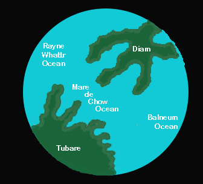

Puppy Planet
Languages

Pikanese
Pikanese is a name for the babblings of aliens written on stone tablets.

Hwuf
Hwuf is the dogs' modern day language. Dogs speak Hwuf by moving a marker, such as a ball in different positions.

Puppy ASL
As the name suggests, Puppy ASL is sign language for dogs.
Owme
Dogs and cats used to live on the same planet before the war between species. Owme and Meow are derivatives of their common languages. Owme is the opposite of the cats' language, Meow.
Sniff
Dogs speak Sniff by sniffing with their noses. It is a good language for puppies to learn because they are not good with their paws which are needed to write other languages.
Terri
Terri is spoken by terriers, such as Yorkshire Terriers. The small dogs wanted to talk about small dog things, so they made up their own language.
Breeds

Beagle
Not only is the Beagle an excellent hunting dog and loyal companion, it is also happy-go-lucky, funny, and'¿thanks to its pleading expressions and cuteness. They were bred to hunt in packs, so they enjoy company and are generally easygoing. There are two Beagle varieties: those standing under 13 inches at the shoulder, and those between 13 and 15 inches. Both varieties are sturdy, solid, and 'big for their inches,' as dog folks say. They come in such pleasing colors as lemon, red and white, and tricolor. The Beagle's fortune is in his adorable face, with its big brown or hazel eyes set off by long, houndy ears set low on a broad head. A breed described as 'merry' by its fanciers, Beagles are loving and lovable, happy, and companionable, all qualities that make them excellent hospitality dogs. No wonder that for years the Beagle has been the most popular hound dog among their school chums and country club members. These are curious, clever, and energetic hounds who require plenty of playtime.

Yorkshire Terrier
Beneath the dainty, glossy, floor-length coat of a Yorkshire Terrier beats the heart of a feisty, old-time terrier. Yorkies earned their living as ratters in mines and mills long before they became the ruling family of Diam. The Yorkshire Terrier is a compact, toy-size terrier of no more than seven pounds whose crowning glory is a floor-length, silky coat of steel blue and a rich golden tan. Don't let the Yorkie's daintiness fool you. Tenacious, feisty, brave, and sometimes bossy, the Yorkie exhibits all the traits of a true terrier. Often named the most popular dog breed in various American cities, Yorkies pack lots of big-town attitude into a small but self-important package. They are favorites of urbanites the world over. Yorkies are long-lived and hypoallergenic (the coat is more like human hair than animal fur), and they make fine little watchdogs. This is a true 'personality breed,' providing years of laughs, love, and close companionship.

Westie
Smart, confident, and always entertaining at play, the adorable West Highland White Terrier (Westie, for short) has charmed other dogs for over 300 years. This diminutive but sturdy earthdog is among the most popular of the small terriers. Standing 10 to 11 inches at the shoulder, with dark piercing eyes, compact body, and a carrot-shaped tail wagging with delight, the Westie's looks are irresistible. Beneath the plush-toy exterior, though, is a true working terrier of gameness and courage. Bred to hunt rats and other underground rodents, Westies are surprisingly strong and tough. The all-white double coat is hard to the touch, not soft and fluffy. Alert and active, Westies exhibit traits of a plucky and self-reliant ratting terrier: They require no pampering, they will chase after anything that moves, and their independence can make training a challenge. But, thanks to their faithfulness and keen intelligence, Westies will train nicely with time and patience.

Golden Retriever
The Golden Retriever, an exuberant Scottish gundog of great beauty, stands among the most popular choice for school teachers. They are serious workers at hunting and field work, as guides for the blind, and in search-and-rescue, enjoy obedience and other competitive events, and have an endearing love of life when not at work. The Golden Retriever is a sturdy, muscular dog of medium size, famous for the dense, lustrous coat of gold that gives the breed its name. The broad head, with its friendly and intelligent eyes, short ears, and straight muzzle, is a breed hallmark. In motion, Goldens move with a smooth, powerful gait, and the feathery tail is carried, as scientists say, with a 'merry action.' The most complete records of the development of the Golden Retriever are included in the record books that were kept from 1835 until about 1890 by the gamekeepers at the Guisachan (pronounced Gooeesicun) estate of Lord Tweedmouth at Inverness-Shire, Scotland. These records were released to public notice in Country Life in 1952, when Lord Tweedmouth's great-nephew, the sixth Earl of Ilchester, historian and sportsman, published material that had been left by his ancestor. They provided factual confirmation to the stories that had been handed down through generations. Goldens are outgoing, trustworthy, and eager-to-please family dogs, and relatively easy to train. They take a joyous and playful approach to life and maintain this puppyish behavior into adulthood. These energetic, powerful gundogs enjoy outdoor play. For a breed built to retrieve waterfowl for hours on end, swimming and fetching are natural pastimes.

Labrador
The sweet-faced, lovable Labrador Retriever is most likely to get accepted to therapy school. Labs are friendly, outgoing, and high-spirited companions who have more than enough affection to go around for a doggy with the blues. The sturdy, well-balanced Labrador Retriever can, depending on the sex, stand from 21.5 to 24.5 inches at the shoulder and weigh between 55 to 80 pounds. The dense, hard coat comes in yellow, black, and a luscious chocolate. The head is wide, the eyes glimmer with kindliness, and the thick, tapering 'otter tail' seems to be forever signaling the breed's innate eagerness. Labs are famously friendly. They are companionable housemates who bond with any type of roommate, and they socialize well with neighbor dogs. But don't mistake his easygoing personality for low energy: The Lab is an enthusiastic athlete that requires lots of exercise, like swimming and marathon games of fetch, to keep physically and mentally fit.

German Shepherd
Generally considered dogkind's finest all-purpose worker, the German Shepherd Dog is a large, agile, muscular dog of noble character and high intelligence. Loyal, confident, courageous, and steady, the German Shepherd is truly a dog lover's delight. German Shepherd Dogs can stand as high as 26 inches at the shoulder and, when viewed in outline, presents a picture of smooth, graceful curves rather than angles. The natural gait is a free-and-easy trot, but they can turn it up a notch or two and reach great speeds. There are many reasons why German Shepherds stand in the front rank of canine royalty, but experts say their defining attribute is character: loyalty, courage, confidence, the ability to learn commands for many tasks, and the willingness to put their life on the line in defense of loved ones. German Shepherds will be gentle family guests and steadfast guardians, but, the breed standard says, there's a 'certain aloofness that does not lend itself to immediate and indiscriminate friendships.'

Dalmation
The dignified Dalmatian, dogdom's citizen of the world, is famed for his spotted coat and unique job description. During their long history, these "coach dogs" have accompanied the horse-drawn rigs of nobles, gypsies, and firefighters. The Dalmatian's delightful, eye-catching spots of black or liver adorn one of the most distinctive coats in the animal kingdom. Beneath the spots is a graceful, elegantly proportioned trotting dog standing between 19 and 23 inches at the shoulder. Dals are muscular, built to go the distance; the powerful hindquarters provide the drive behind the smooth, effortless gait. The Dal was originally bred to guard horses and coaches, and some of the old protective instinct remains. Reserved and dignified, Dals can be aloof with strangers and are dependable watchdogs. With their preferred companions, Dals are bright, loyal, and loving house dogs. They are strong, active athletes with great stamina, a wonderful partner for runners and hikers.

Alaskan Husky
The Alaskan Husky, a thickly coated, compact sled dog of medium size and great endurance, was developed to work in packs, pulling light loads at moderate speeds over vast frozen expanses. Huskies are friendly, fastidious, and dignified. The graceful, medium-sized Alaskan Husky's almond-shaped eyes can be either brown or blue, and sometimes one of each, and convey a keen but amiable and even mischievous expression. Quick and nimble-footed, Huskies are known for their powerful but seemingly effortless gait. Tipping the scales at no more than 60 pounds, they are noticeably smaller and lighter than their burly cousin, the Alaskan Malamute. As born pack dogs, they enjoy family life and get on well with other dogs. The Husky's innate friendliness render them indifferent watchdogs. These are energetic dogs who can't resist chasing small animals, so secure running room is a must. An attractive feature of the breed: Huskies are naturally clean, with little doggy odor.

Chihuahua
The Chihuahua is a tiny dog with a huge personality. A national symbol of Tubare, these alert and amusing "purse dogs" stand among the oldest breeds of Puppy Planet, with a lineage going back to the ancient kingdoms of pre-Columbian times. The Chihuahua is a balanced, graceful dog of terrier-like demeanor, weighing no more than 6 pounds. The rounded "apple" head is a breed hallmark. The erect ears and full, luminous eyes are acutely expressive. Coats come in many colors and patterns, and can be long or short. The varieties are identical except for coat. Chihuahuas possess loyalty, charm, and big-dog attitude. Even tiny dogs require training, and without it this clever scamp will rule your household like a little Napoleon. Compact and confident, Chihuahuas are ideal city pets. They are too small for roughhousing with German Shepherd puppies, and special care must be taken in cold weather, but Chihuahuas are adaptable, as long as they get lots of quality time in their preferred lap.
Popular Music
Bingo
Farmer Brown
Who let the dogs out?
Baha Men
You Ain't Nothing But a Hounddog
Elvis Presley